Error in integrate(f, subdivisions = 1e+05, rel.tol = 0.1, lower = xmin, :
a limit is NA or NaNHeating needs
Introduction
In this document I’m describing a possible method for estimating the expected amount of energy required for heating left for a given year (or season as my billing cycle starts annually on August 1st, during the local summer).
I was motivated by my local billing method which has a huge discount for natural gas but only up to a given amount. I can supplement my heating with air conditioning, but that is more expensive than the discounted gas (but not more expensive than the full-priced gas). The efficiency of the air conditioning is also impacted by the outside temperature, COP (amount of heating / amount of electricity used) being higher when the outside temperature is higher.
Bottom line is, I’d like to use a given amount of natural gas for heating per year, and to top off the remaining heat requirements with air conditioning, preferably during autumn & spring.
For better or worse I feel that a considerable amount of my professional pride rests in tracking & determining the optimal method of heating.
Description of the data
Meteorological data from 1995 onward is available for free at meteostat for my location in Budapest, Hungary (Europe) in excel. I haven’t figured out the API, and I am downloading a new excel periodically and concatenating them in R.
I have also read my gas meter regularly from 2018 onwards. To make it interesting, I don’t read the meter regularly, so the times between readings are between 2.4 hours and 163 days so the quality of the observations are not ideal.
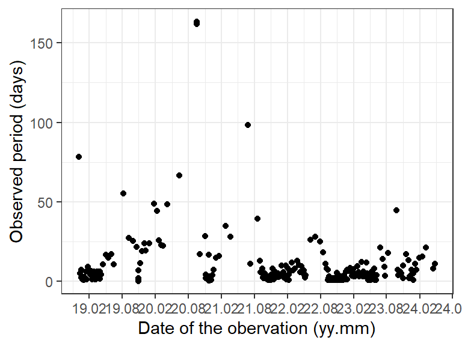
Quantifying cold and long winters
The amount of energy required for heating is the function of the outside temperature.
Therefore to predict the energy needs left in a given (heating) season, we should make a prediction about the expected amount of energy required until the end of the season.
Thankfully things seem to be straightforward if we assume that the inside temperature of the building should be constant (it’s not but bear with me). Assume 20°C (68°F). Heat loss is linear to the difference in temperature between the inside and outside temperatures link.
Therefore when the outside temperature is 16°C we would need 4x the power to heat the building than if it would be 19°C. Also, this amount of energy needed for these two days is the same that we would need for heating for 3 days if it were \(20 - 5/3 = 18.33\) degrees outside. In other words for a given heating season, we would add up the “missing degrees” until 20 for every day the outside temperature was less than 20°.
We have a pesky issue with missing data (sometimes every 2nd or 3rd date has results in the 90’s). The below step is quite rudimentary, doing linear interpolation between existing datapoints. This would capture the high autocorrelation between dates but it ain’t perfect.
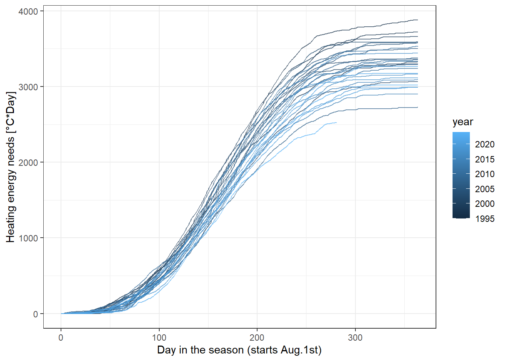
I personally like this approach very much, but of course we are neglecting:
- The effects of solar radiation, eg. sunlight heats up the building a bit,
- the building’s heat capacity, eg. after a hot summer’s day, it takes about 3 days for the walls to cool
For simplicity and to retain my sanity, lets also assume that at each timepoint (day), the distribution of ‘energy needs’ is normal.
Important
The evolution of the energy needs may be thought of as logistic growth but I’m not exploring that at this time.
I’d like to fit a linear model for the energy needs with a natural spline term containing the elapsed days. To capture the apparent heteroscedasticity, I’d opt for a generalized least squares model with an exponential variance structure (meaning that the residuals are understood to have a larger variance when more days have elapsed). Its not perfect, since at the end of the season (june, july) not much heating is going on and therefore variance tends to taper off there.
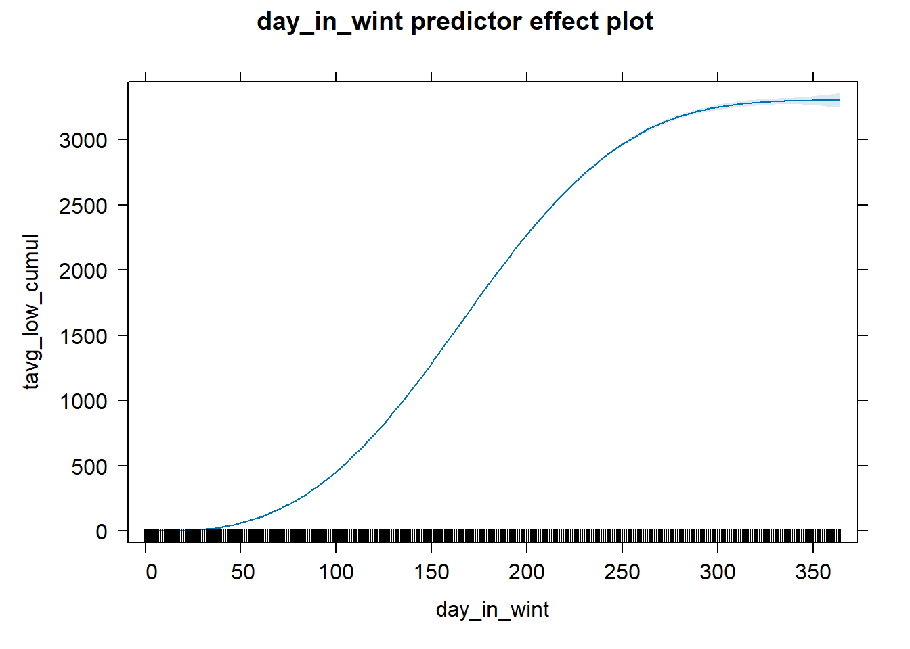
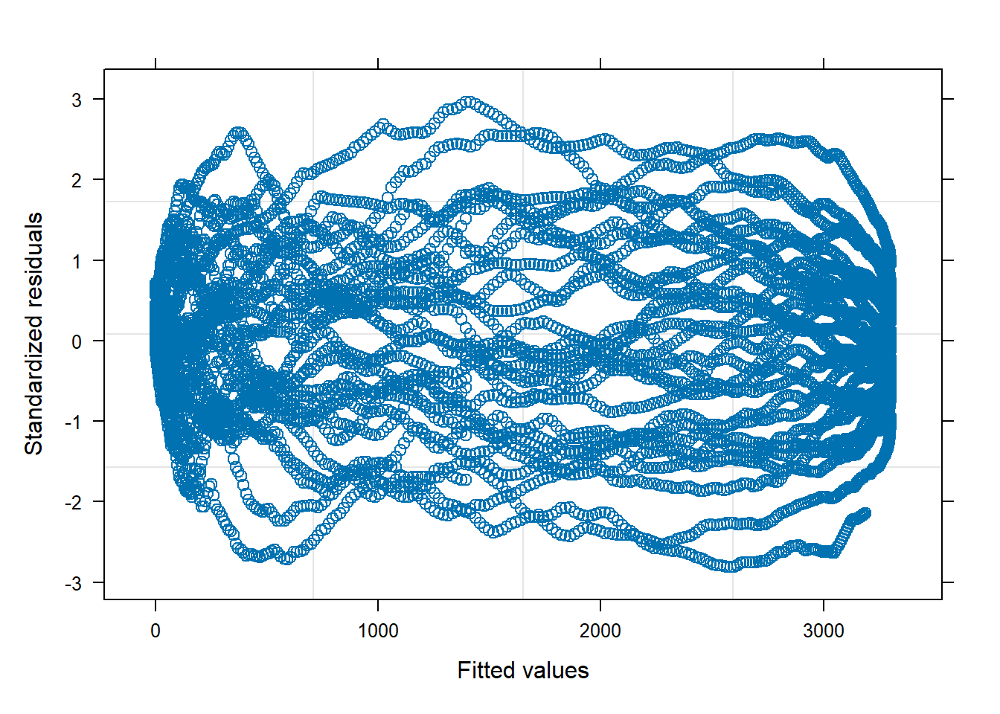
I could not, for the life of me got the prediction intervals correctly out of the model which would expand over the course of the elapsed days. One potential solution would be the package AICcmodavg but it threw an error (possibly because I used tibbles for my data; solution is trivial, but not going to implement it).
As a “petty craftsman” kind of approach, I calculated standard deviations for all days and then fitted a linear model over it with a natural spline term capturing the evolution of standard deviation in heating needs over the course of a season.
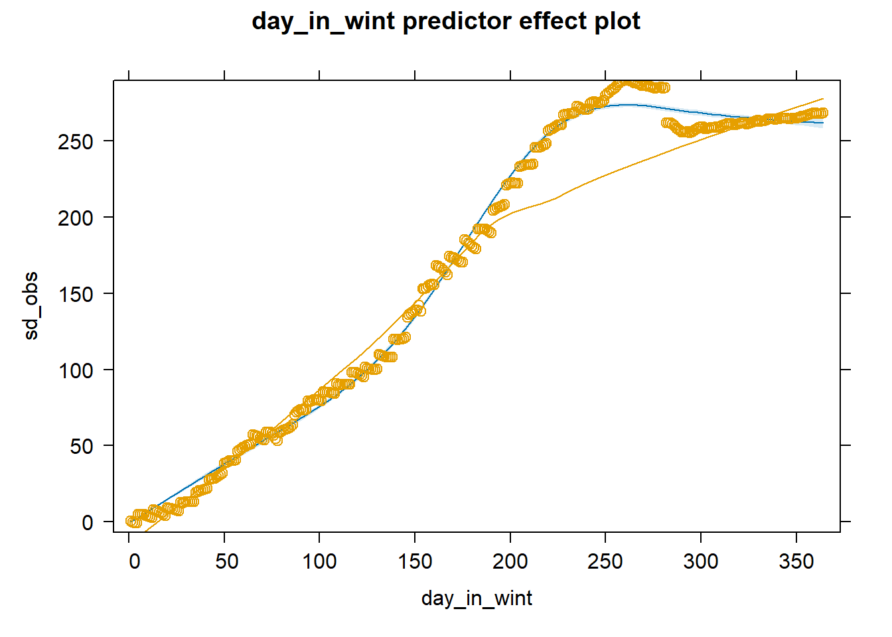
Now we have a mean and a variance for the cumulative heating energy needs on any given day (at my location)! I can then assign a z-score for each result through the years.

Estimating total energy needs left on a given day
This is all well and good, and this translates to an estimated total energy need at the beginning of a season, but we are mainly interested in the conditional energy need for the total season if we have observed the cumulative energy need up to day “d”.
I start with investigating how do energy need values observed on a given day correlate to the total energy need for a given season. Specifically, what was the correlation between the z-scores of a given day vs. the last day in a season.
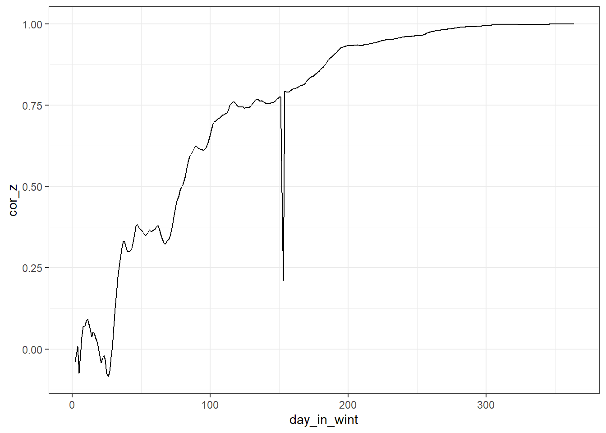
The spike around day 150 is due to leap years (probably); didn’t bother to fix it, as it didn’t bother the results much. I fit a linear model with a spline for this relationship, like before.
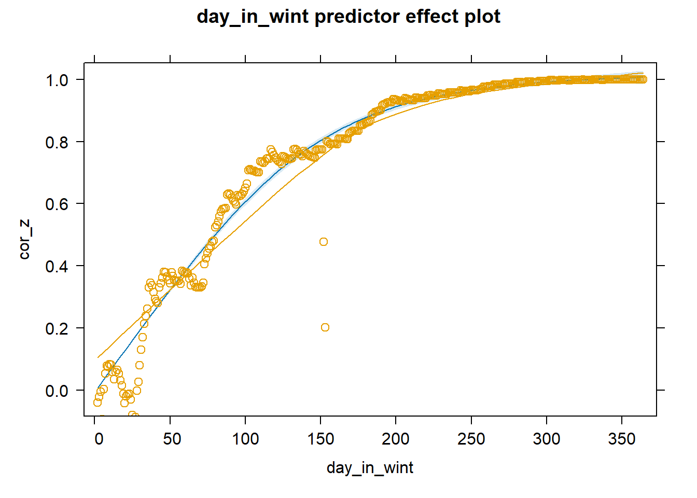
Sooo…. we are searching for the Y normal distribution, which is correlated by c with the normal distribution X, then
\(mean(Y)|(X=x) = c * x\)
\(variance(Y)|(X=x) = (1 - c^2)*variance(Y)\)
Lets fix day n the season as 173 and the cumulated energy need thus far as 1530 (beginning of January, 2024). I’m not a 100% that I’ve implemented the intermediate values the right way, but I am sure about the end state (at Day 365). Level of significance is at 5% (hence the 1.96x SD part).
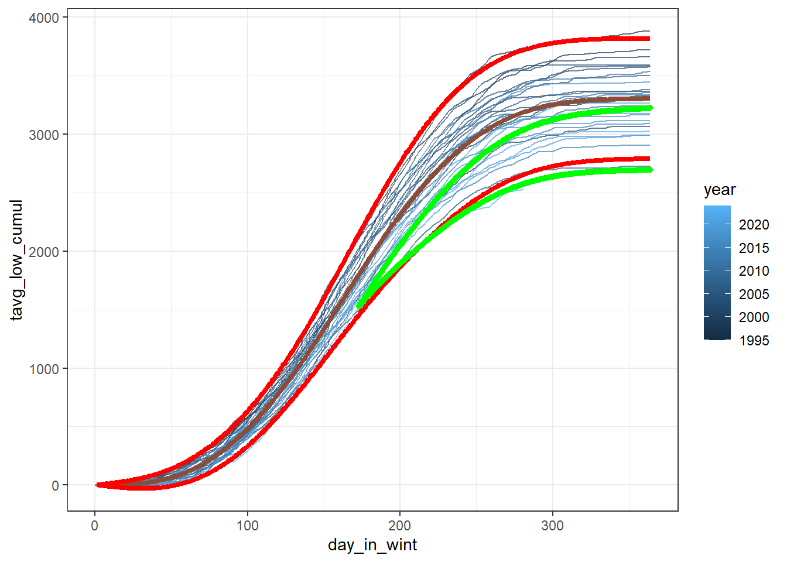
I can therefore construct an interval estimate of how much energy I still need to burn in this heating season (how much ‘coldness’ there will be before summer). I prefer to see the realized energy need as a percentage of what can be expected in total.
[1] 0.4749717[1] 0.5681479It seems that up until this point we have experienced 47-57% of our total energy need for heating this season.
Figuring in actual energy usage
First approximation based on data from a given season
I have everything I need to make predictions about the expected total amount of gas I need for the rest of the year. For each day, I make an interval prediction for the total energy requirement for the year, I calculate the remaining portion of this need, and I estimate the amount of gas I need for this portion, given that I used up V amount of gas for Q amount of heating.
The method isn’t perfect. I seem to get reliable estimates around 1 month into winter. There are multiple potential reasons: - The house has a ton of heat capacity, and I don’t actually need to heat it if the mean temperature drops to ~19° for a day or two. This makes the realized ‘energy needs’ conservative in the autumn/spring. - I use the heat pump for heating sometimes when the temperature difference isn’t huge (and therefore the heat pump is crazy efficient). This inflates the estimated energy needs further when the temperature difference is low (autumn/summer).
The resulting estimates are quite cool though.
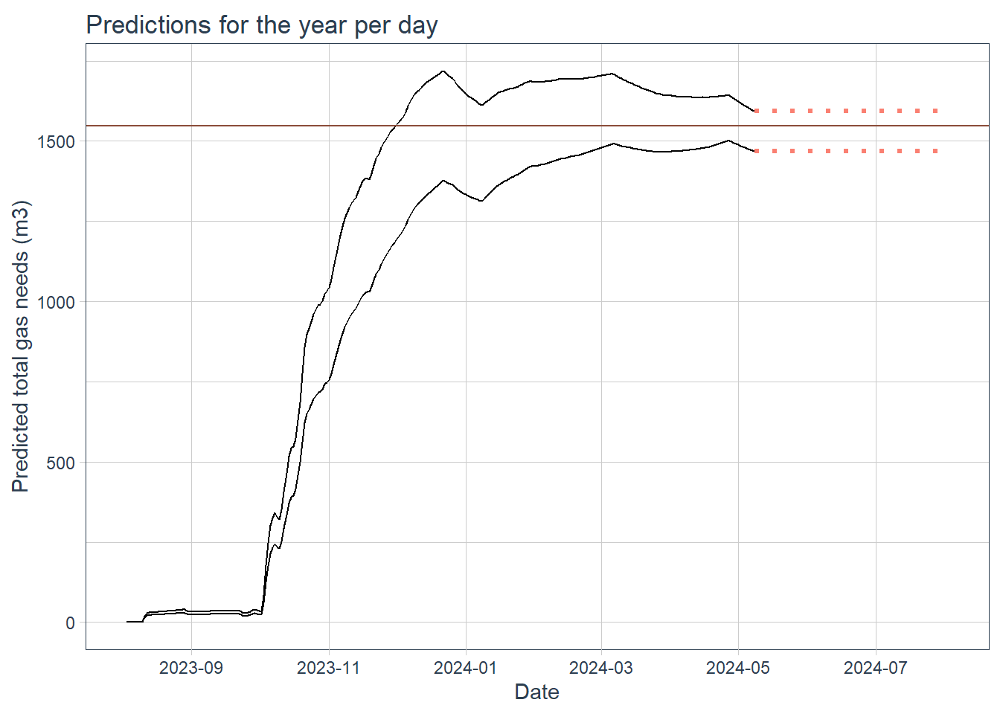
The width of the confidence interval is decreasing after a point too, I hope it reaches ‘0’ when the year is done.
Second approximation - using data from previous years
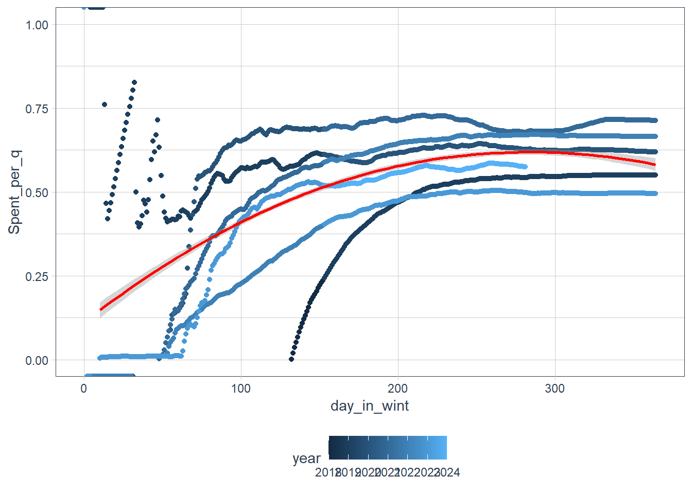
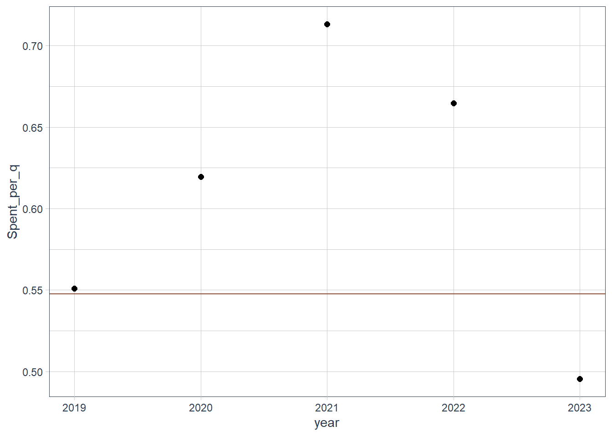
Remarks
MD5 checksum of the database used
Other information regarding the document’s compilation
Analyses were conducted using the R Statistical language (version 4.3.1; R Core Team, 2023) on Windows 10 x64 (build 19045), using the packages lubridate (version 1.9.3; Grolemund G, Wickham H, 2011), here (version 1.0.1; Müller K, 2020), nlme (version 3.1.164; Pinheiro J et al., 2023), ggplot2 (version 3.5.0; Wickham H, 2016), readxl (version 1.4.3; Wickham H, Bryan J, 2023) and dplyr (version 1.1.4; Wickham H et al., 2023).
References
- Grolemund G, Wickham H (2011). “Dates and Times Made Easy with lubridate.” Journal of Statistical Software, 40(3), 1-25. https://www.jstatsoft.org/v40/i03/.
- Müller K (2020). here: A Simpler Way to Find Your Files. R package version 1.0.1, https://CRAN.R-project.org/package=here.
- Pinheiro J, Bates D, R Core Team (2023). nlme: Linear and Nonlinear Mixed Effects Models. R package version 3.1-164, https://CRAN.R-project.org/package=nlme. Pinheiro JC, Bates DM (2000). Mixed-Effects Models in S and S-PLUS. Springer, New York. doi:10.1007/b98882 https://doi.org/10.1007/b98882.
- R Core Team (2023). R: A Language and Environment for Statistical Computing. R Foundation for Statistical Computing, Vienna, Austria. https://www.R-project.org/.
- Wickham H (2016). ggplot2: Elegant Graphics for Data Analysis. Springer-Verlag New York. ISBN 978-3-319-24277-4, https://ggplot2.tidyverse.org.
- Wickham H, Bryan J (2023). readxl: Read Excel Files. R package version 1.4.3, https://CRAN.R-project.org/package=readxl.
- Wickham H, François R, Henry L, Müller K, Vaughan D (2023). dplyr: A Grammar of Data Manipulation. R package version 1.1.4, https://CRAN.R-project.org/package=dplyr.
Time of compilation
2024-05-01 12:56:39.970234